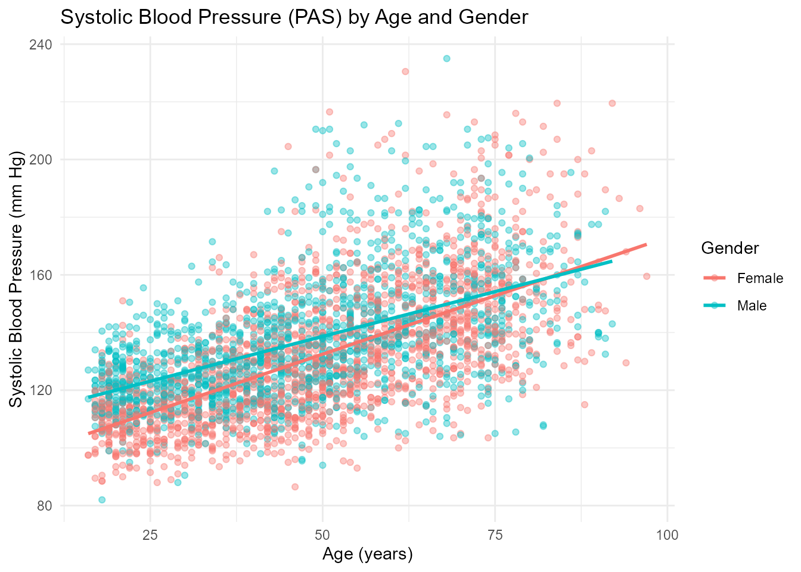

ChileDataAPI: Access Chilean Data via APIs and Curated Datasets
Source:vignettes/ChileDataAPI_vignette.Rmd
ChileDataAPI_vignette.Rmd
library(ChileDataAPI)
library(ggplot2)
library(dplyr)
#>
#> Attaching package: 'dplyr'
#> The following objects are masked from 'package:stats':
#>
#> filter, lag
#> The following objects are masked from 'package:base':
#>
#> intersect, setdiff, setequal, unionIntroduction
The ChileDataAPI package provides a unified interface to
access open data from the FINDIC API and the REST Countries
API, with a focus on Chile. It allows users to easily retrieve
up-to-date time series data on financial indicators such as the
UF, UTM, Dollar, Euro, Yen, Copper price per pound, Bitcoin, and
the IPSA index, as well as international metadata on countries
via standardized API calls.
All API-based functions return data as tidy tibble objects, making
them ready for immediate use in data pipelines. The financial indicator
functions, such as get_chile_dollar(),
get_chile_uf(), and get_chile_bitcoin(),
provide real-time series of daily or monthly values, with each row
representing a timestamped observation. This makes
ChileDataAPI a valuable tool for working with economic time
series data in a reproducible manner.
In addition to API-access functions, the package includes a collection of curated datasets related to Chile, covering diverse topics such as:
Demographics: sample microdata from the 2017 Chilean CensusElections: data from the 2021 presidential elections and national plebiscitesPublic health: individual-level records from national health surveysHuman rights: detailed accounts of violations during the Pinochet regimeSeismology: geolocated data on earthquakes in ChileGeopolitical data: official territorial codes for communes, provinces, and regionsEnvironmental history: tree-ring based climate series from Malleco forest
ChileDataAPI is designed to support research, teaching,
and data analysis focused on Chile by integrating public
RESTful APIs with high-quality, domain-specific datasets into a single,
easy-to-use R package.
Functions for ChileDataAPI
The ChileDataAPI package provides several core functions
to access real-time and structured information about Chile from public
APIs such as FINDIC and REST Countries. Below is a list of
the main functions included in the package:
get_chile_bitcoin(): Retrieves the daily Bitcoin price in Chilean Pesos over the last month.get_chile_copper_pound(): Returns historical daily copper prices (per pound).get_chile_dollar(): Provides the exchange rate of the U.S. Dollar in CLP.get_chile_euro(): Provides the exchange rate of the Euro in CLP.get_chile_ipsa(): Retrieves daily values of the IPSA (Chile’s stock market index).get_chile_uf(): Returns daily values of the Unidad de Fomento (UF).get_chile_utm(): Returns monthly values of the Unidad Tributaria Mensual (UTM).get_chile_yen(): Provides the exchange rate of the Japanese Yen in CLP.get_country_info(name): Get essential information about Chile or any other country by its full name Example: get_country_info(“Chile”),get_country_info(“chile”),get_country_info(“Peru”)view_datasets_ChileDataAPI(): Lists all curated datasets included in theChileDataAPIpackage
These functions return real-time data in tidy tibble
format and represent time series that are updated daily
or monthly depending on the source.
These functions allow users to access high-quality and structured
information on Chile, which can be combined with tools like
dplyr, tidyr, and ggplot2 to
support a wide range of data analysis and visualization tasks. In the
following sections, you’ll find examples on how to work with
ChileDataAPI in practical scenarios.
Get Observed Copper Price per Pound
chile_copper_price <- head(get_chile_copper_pound(),n=10)
print(chile_copper_price)
#> # A tibble: 10 × 2
#> fecha valor
#> <chr> <dbl>
#> 1 2025-07-11 4.38
#> 2 2025-07-10 4.46
#> 3 2025-07-09 4.49
#> 4 2025-07-08 4.52
#> 5 2025-07-07 4.56
#> 6 2025-07-04 4.59
#> 7 2025-07-03 4.56
#> 8 2025-07-02 4.56
#> 9 2025-07-01 4.59
#> 10 2025-06-30 4.64Get exchange rate of the U.S. Dollar in CLP
chile_dollar_price <- head(get_chile_dollar(),n=10)
print(chile_dollar_price)
#> # A tibble: 10 × 2
#> fecha valor
#> <chr> <dbl>
#> 1 2025-07-11 950.
#> 2 2025-07-10 948.
#> 3 2025-07-09 945.
#> 4 2025-07-08 940.
#> 5 2025-07-07 932.
#> 6 2025-07-04 928.
#> 7 2025-07-03 927.
#> 8 2025-07-02 927.
#> 9 2025-07-01 933.
#> 10 2025-06-30 936.Get exchange rate of the Euro in CLP.
chile_euro_price <- head(get_chile_euro(),n=10)
print(chile_euro_price)
#> # A tibble: 10 × 2
#> fecha valor
#> <chr> <dbl>
#> 1 2025-07-11 1111.
#> 2 2025-07-10 1111.
#> 3 2025-07-09 1108.
#> 4 2025-07-08 1101.
#> 5 2025-07-07 1098.
#> 6 2025-07-04 1090.
#> 7 2025-07-03 1093.
#> 8 2025-07-02 1091.
#> 9 2025-07-01 1099.
#> 10 2025-06-30 1094.Systolic Blood Pressure by Age and Gender
# Clean data: remove missing values from key variables
health_clean <- chile_health_survey_df %>%
filter(!is.na(age), !is.na(pas), !is.na(male))
# Create gender variable
health_clean <- health_clean %>%
mutate(gender = ifelse(male == 1, "Male", "Female"))
# Plot: Systolic Blood Pressure vs Age by Gender
ggplot(health_clean, aes(x = age, y = pas, color = gender)) +
geom_point(alpha = 0.4) +
geom_smooth(method = "lm", se = FALSE) +
labs(
title = "Systolic Blood Pressure (PAS) by Age and Gender",
x = "Age (years)",
y = "Systolic Blood Pressure (mm Hg)",
color = "Gender"
) +
theme_minimal()
Dataset Suffixes
Each dataset in ChileDataAPI is labeled with a
suffix to indicate its structure and type:
_df: A standard data frame._ts: A time series object._tbl_df: A tibble data frame object.
Datasets Included in ChileDataAPI
In addition to API access functions, ChileDataAPI
provides several curated datasets offering valuable insights into
Chile’s recent history, population health, territorial
divisions, electoral processes, and seismic activity. Here are some
featured examples:
census_chile_2017_df: Data frame containing microdata from the 2017 Chilean census, specifically from the commune of San Pablo. The dataset includes 7,512 observations, all variable names and data values are in Spanish.chile_earthquakes_tbl_df: Tibble containing information about significant (perceptible) earthquakes that occurred in Chile from January 1st, 2012 to the present.malleco_tree_rings_ts: Time series object (ts) containing the average annual tree ring width, measured in millimeters, for Araucaria Araucana trees located in the Malleco region of Chile.
Conclusion
The ChileDataAPI package provides a robust set of tools
to access open data about Chile through RESTful APIs
and curated datasets. It includes functions to retrieve real-time
financial indicators—such as the value of the dollar, euro, yen, copper,
UF, UTM, and Bitcoin—via the FINDIC API, as well as
international country information through the REST Countries
API. Additionally, it offers preloaded datasets covering
Chile’s recent history and socio-political context, including
the 2017 census sample, the 2021 presidential election, public health
survey data, territorial codes, seismic events, and records of human
rights violations during the Pinochet regime.